Perro
PerroLuna
- Hembra
- Adulta · 3 años
- Mediana
Llegó con una pata lastimada. Hoy está sana, esterilizada y lista para conocer a su familia.
Quiero conocer a Luna
Todos nuestros animales se entregan vacunados, desparasitados y esterilizados. Conócelos y escríbenos para coordinar una visita.
PerroLlegó con una pata lastimada. Hoy está sana, esterilizada y lista para conocer a su familia.
Quiero conocer a Luna Foto próximamentePerro
Foto próximamentePerroJuguetona y curiosa. Busca una familia con tiempo para enseñarle y salir a pasear.
Quiero conocer a CanelaTranquilo y cariñoso. Ideal para departamento; se lleva bien con otros gatos.
Quiero conocer a Tomás Foto próximamenteGato
Foto próximamenteGatoRescatada de la calle junto a sus hermanos. Ronronea apenas la cargas.
Quiero conocer a PelusaFoto próximamentePerroUn gigante noble. Le encanta descansar al sol y que le rasquen las orejas.
Quiero conocer a RockyFoto próximamenteGatoSabia y serena. Busca un hogar calmado donde pasar sus mejores años.
Quiero conocer a MíaPor ahora no tenemos animales en esta categoría. ¡Vuelve pronto o síguenos en Instagram!
Queremos que cada adopción sea para toda la vida, por eso acompañamos a la familia antes y después.
Cuéntanos a quién quieres conocer y un poco sobre tu hogar y tu familia.
Conversamos para asegurarnos de que el animal y tu familia sean una buena pareja.
Coordinamos un encuentro para que se conozcan con calma.
Firmamos el compromiso de adopción y te acompañamos en los primeros meses.
[Indicar si se pide un aporte de adopción y qué cubre, por ejemplo vacunas y esterilización.]
Sí. Te ayudamos a elegir un compañero cuyo tamaño y energía se adapten a tu espacio y tu rutina.
[Indicar en qué ciudades o provincias se realizan adopciones.]
Escríbenos. Nunca abandones a un animal: la fundación lo recibe de vuelta y busca otra familia.